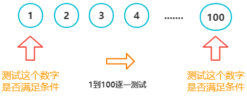

- 所谓的流程控制语句，就是指我们可以通过这些语句来控制代码按照什么样的顺序结构来执行。
- 在 JS 中流程控制主要有三种结构：顺序结构、分支结构、循环结构，这三种结构代表三种不同的代码执行顺序。
- 顺序结构：代码默认执行结构就是按顺序结构，从上往下依次执行的。
- 分支结构语句：
- if 语句
- switch 语句
- 循环结构的语句：
- for 语句
- while 语句
- do while 语句
- 其它语句
- break 退出当前循环
- continue 跳过当前迭代，继续执行下一个迭代
- label 给语句加标签，常和for嵌套循环一起使用
一、if语句
if 语句是使用最频繁的语句之一，也是最简单的条件语句，也称为选择语句（条件判断语句）
- 最简单的if语句
if是如果的意思，如果()括号中的条件成立，则就执行{ }大括号中的语句块。- 如果不成立，则啥也不做
>if (条件) {
> // 当条件为真，则执行这里的代码
> // 语句块.....
>}
>// if语句后面的代码.....
注：
- 这里的语句块可能是一行代码，也可能是一个多行代码
- ()括号里的条件可以是任何值或任何表达式，并且求值结果不一定是布尔值。
- 但 JS 内部会自动调用Boolean()函数，将这个表达式的返回值转为 布尔值。
- 如果条件求值为true,则执行{}中的语句块，如果条件求值为false，则啥也不做。执行 if 语句后面的代码。
if 语句写法
><script>
> // 3>2 条件表达式，返回值为true
> if (3 > 2) {
> console.log(3 > 2); // true
> }
></script>
要注意区分那些是属于 if 语句体中的语句
- if语句体外的代码，不管if中的条件是满足，他都会执行
if 语句的简写
- 如果 if 语句体中只有一条语句，可以省略大括号和换行
- 如果超过一条语句，是万万不能简写的，简写会造成编译错误。
><script>
> if (2 < 3) console.log("2<3成立，在控制台输出");
> if (2 > 3) console.log("2>3不成立，不在控制台输出");
> console.log("我与if无关，我永远出来");
></script>
- if-else 语句
- 如果条件求值为 true，则执行语句块 1 中的内容，否则执行语句块 2 中的内容
>if (条件) {
> // 当条件为true，则执行这里代码
> // 语句块1....
>} else {
> // 当条件为false，则执行这里代码
> // 语句块2....
>}
案例实践：判断用户输入的数是偶数还是奇数
- 结合
%来实现- 如果一个数除以 2,能整除，也就是余数为 0，就是偶数，否则就是奇数
><script>
> // 弹出弹窗，让用户输入内容
> var num = Number(prompt("请用户输入一个数字"));
> // 上面num接收过来的值，是字符串类型，不过num%2时num会自动做隐式类型转换，转换成数字
> if (num % 2 == 0) {
> alert(num + "他是一个偶数");
> } else {
> alert(num + "他是一个奇数");
> }
></script>
但是如果用户啥也不输，以及
''和' '也会被转成 0，这里暂时不做讲解，下面案例中会完善
if-elseif 多条件分支语句- 如果条件 1 成立，则执行语句 1，后面的就不看了
- 如果条件 1 不成立，则看条件 2，如果条件 2 成立，则执行语句 2，如果不成立，则执行语句 3
>if (条件1) {
> // 条件2为真，执行这里的代码
> // 语句 1....
>} else if (条件2) {
> // 条件1为假，条件2为真，执行这里代码
> // 语句 2....
>} else {
> // 条件1和1都为假，执行这里代码
> // 语句2....
>}
案例实践 1：根据用户的输入的成绩，判断用户是在那个成绩档次
| 分数 | 档次 |
|---|---|
| 90-100 | 优秀 |
| 89-70 | 良好 |
| 69-60 | 一般 |
| 0-59 | 不及格 |
><script>
> var score = prompt("请输入你的考试成绩！");
> if (score >= 90) {
> alert("成绩优秀");
> } else if (score >= 70) {
> alert("成绩良好");
> } else if (score >= 60) {
> alert("成绩及一般");
> } else {
> alert("成绩不及格");
> }
></script>
案例实践 2：判断用户输入的内容是否为数字
思路分析：
- 用户输入的内容，都是字符串，我们要判断是否为数字，肯定是要把类型转换数字，看能不能转成功。
- 将字符串转成数字的方法有很多Number()、parseInt()、parseFloat()、+号，我们选那个呢？
- Number()和+都可以，只要字符串不是纯数字，都会转成NaN，纯数字符串都会转成数字，但
' '空格不行，会被转成0- 所以接下来，接下来先过滤不是纯数字字符串，再过滤
' '空格，剩下的就都是纯数字字符串了- 要判断 Number()函数转换后的结果是不是
NaN和数，有两种办法，
isNaN用来判断一个数是不是数字，而 NaN 正好不是数字，- 还可以用 NaN 不自等的方法来判断。
- 接下来要过滤
' '，' '空格 和 数字，可以通过parseInt()和isNaN结合- 剩下的就都是 纯数字字符串了
><script>
> var num=prompt('请输入数字！');
> if(isNaN(Number(num))){
>// 如果条件成立，则num不是纯数字字符串，但不能过滤'' 空格
> console.log(num+'不是一个数字');
> }else if (isNaN(parseInt(num))){
>// ''空格，会被转成NaN，NaN不是数字，为真，剩下的，就全都是纯数字了
> console.log(num +'不是一个数字');
> }else{
> console.log(num+'是一个纯数字');
> }
></script>
封装成方法使用：用来判断用户输入的是否是纯数字
>function isNumber(num) {
> if (isNaN(+num)) {
> // 如果条件成立，则num不是纯数字字符串，但不能过滤'' 空格
> return false;
> } else if (isNaN(parseInt(num))) {
> // 识别空格或者没有输入任何值
> return false;
> } else {
> return true;
> }
>}
- if、if-else、if-else if 语句的嵌套
>if(){
>// 语句 1
>// 语句中可以嵌套 if(){}else{ } 或if()else if(){}等if语句
>}else{
>// 语句 2
>// 语句2中可以嵌套 if(){}else{ } 或if()else if(){}等if语句
>}
案例实践 1：BMI 肥胖指数计算
- BMI 指数（Body Mass Index，身体质量指数）是用体重（以公斤为单位）除以身高（以米为单位）的平方得出的数字，是目前国际上常用的衡量人体胖瘦程度以及是否分赴康的标准。
- BMI 指数 = 体重 / 身高 *身高
BMI值 分档 低于 18.5 过瘦 18.5~24（不含） 正常 24~28（不含） 过胖 28~32（不含） 肥胖 大于等于 32 非常肥胖
><script>
> // 要求用户输入身高,强制转换为数字
> var height = parseFloat(prompt("请输入你的身高多少米"));
> // 要求用户输入体重
> var weight = parseFloat(prompt("请输入你的体重"));
> // 判断输入是否合法
> if (isNaN(height) || isNaN(weight)) {
> alert("你的输入有误！");
> } else {
> // 计算得到BMI指数
> var bmi = weight / (height * height);
>
> // 分档判断
> if (bmi < 18.5) {
> alert("偏瘦");
> } else if (bmi < 24) {
> alert("正常");
> } else if (bmi < 28) {
> alert("过胖");
> } else if (bmi < 32) {
> alert("肥胖");
> } else {
> alert("非常肥胖");
> }
> }
></script>
- 注意！不要写成
bmi = (weight / height) * height，结果不同，重量除的是身高的平方- 规律：用
大于号就从大到小进行匹配，用小于号就从小到大
案例实践 2：判断用户输入的数是偶数还是奇数
- 利用前面封装好的：判断是否为纯数字
><script>
> var num = prompt("请用户输入一个数字");
> if (isNumber(num)) {
> if (num % 2 === 0) {
> alert(num + "是一个偶数");
> } else {
> alert(num + "是一个奇数");
> }
> } else {
> alert("你的输入有误,请重新输入一次");
> }
>
> // 封装好的，用来判断用户输入的是否是纯数字
> function isNumber(num) {
> if (isNaN(+num)) {
> // 如果条件成立，则num不是纯数字字符串，但不能过滤'' 空格
> return false;
> } else if (isNaN(parseInt(num))) {
> // 识别空格或者没有输入任何值
> return false;
> } else {
> return true;
> }
> }
></script>
案例实践 3：游乐园门票计算
- 某游乐园的门票价格如下表所示
- 请用户输入年龄和星期几，弹出对话框显示门票价格
- 星期日到星期一，分别用阿拉伯数字 0、1、2、3、4、5、6 表示
| 年龄大于 12 岁 | 年龄小于等于 12 岁 | |
|---|---|---|
| 平日 | 100 | 50 |
| 周末 | 200 | 150 |
两种实现思路：
- 左图：先判断星期几，再判断年龄
- 右图：先判断年龄，再判断星期几
><script>
> // 自动获取当前日期
> var date = new Date();
> // 设置日期 var date = new Date("2022/9/912");
> // 获取当前星期，0-6分别表示星期日-星期六
> var week = date.getDay();
> // 让用户输入年龄
> var age = Number(prompt("请输入你的年龄"));
>
> if (week == 0 || week == 6) {
> // 周末
> if (age > 12) {
> alert("周末门票价格" + 200);
> } else {
> alert("周末门票价格" + 150);
> }
> } else {
> // 平日
> if (age >= 12) {
> alert("今天门票价格" + 100);
> } else {
> alert("今天门票价格" + 50);
> }
> }
></script>
new Date()：获取当前日期.getDay()获取日期对应星期
注：
- 在实际业务场景中，年龄也不会让用户自己输入，而是通过扫描身份证或输入身份证号来识别
- 身份证识别相关技术：
- 百度 AI 实践案例，点击查看https://ai.baidu.com/tech/ocr_cards/idcard
- 阿里云 AI 实践案例，点击查看https://ai.aliyun.com/ocr/card
二、switch语句
switch (表达式或变量) {
case 值1:
// 执行语句1....
break;
case 值2:
// 执行语句2....
break;
default:
// 执行语句3....
break;
}
- switch 语句基本用法
swith 后面的表达式或变量会依次会与case 后面的值进行比较，比较时是全等比较，因此不会做数据类型转换
- 如果比较结果为
true，就会执行当前case下面的执行语句,执行到break关键字，就会跳出switch语句，退出执行。 - 如果比较结果为
false，则继续往下比较，如果所有结果都为 false，则最后会执行 default 下面的语句。 - 当然
default也可以省略不写
- 如果比较结果为
><script>
> var a = 1; // a的类型是数字，这里可以尝试把值换成 1,3看下结果
> switch (a) {
> case "1": // 1 与 '1' 在全等比较时，返回false 不成立，则继续与下一个case后面值比较
> alert("这里是字符串1,匹配失败");
> break;
> case 2: // 1 与 2全等比较，false，继续往下比较
> alert("这里是2,匹配失败");
> break;
> case 1: // 1 与 1 全等，则执行这个case后面的语句
> alert("这里是1,匹配成功"); // 在页面弹出弹窗
> break;
> default:
> alert("找不到相匹配的内容");
> break;
> }
>//以上代码最后执行结果，最后在页面弹出弹窗，弹窗内容为 '这里是 1,匹配成功'
></script>
- 当switch()为表达式时，输出的结果是布尔值，用布尔值来与case值比较
- 在实际开发时，switch()括号中表达式的值，经常是以变量形式出现
- break 不写会有什么影响
- 如果不写
break，则会在匹配成功之后，后面所有case 都将被视为匹配，直到遇见break，才会退出。 - 所有在 switch 语句中，程序员必须主动调用break来跳出switch语句体
- 如果不写
><script>
var a = 1;
switch (a) {
case 0: // 全等匹配失败
alert("这里是0,匹配成功"); // 这里不会弹出来
case 1: // 全等匹配成功，下面代码会执行
alert("这里是1,匹配成功"); // 这里会弹出来
// 但这个case中没有break，则会将后面所有case都被视为匹配，遇到break才退出
case 2:
alert("这里是字符串2,匹配成功"); // 这里会弹出来
break; // 到这里退出
default:
alert("找不到相匹配的内容");
break;
}
></script>
在上面的代码中，与第二个case匹配成功后，由于没有break会直接执行后续的case，直至遇到break跳出语句体
- 多条 case 共同一个语句体
>var a = 1;
> switch (a) {
> case 1:
> case 2:
> case 3:
> alert("现在是工作日，记得要早起喽！");
> break;
> }
- 由于前两个case都没有语句和break，根据上一点可知，不管switch的值是1、2、3都会执行alert语句，再跳出语句体
if语句形式
><script>
> var week = 0;
> if (week == 1 || week == 2 || week == 3 || week == 4 || week == 5) {
> alert("现在是工作日，记得要早起喽！");
> } else if (week == 0 || week == 6) {
> alert("今天是周末，尽情的享受吧");
> }
></script>
switch 语句
><script>
> // week表时当前星期几
> var week = 4;
> // var week=new Date().getDay(); 自动获取当天是星期几的方法
> switch (week) {
> case 1:
> case 2:
> case 3:
> case 4:
> case 5:
> alert("现在是工作日，记得要早起喽！");
> break;
> case 6:
> case 0:
> alert("今天是周末，尽情的享受吧");
> break;
> }
></script>
- switch 表达式值为布尔值
case的结果也要是布尔值或者为布尔值的表达式
判断一个人是否是未成年人，如果满 18，就是成功，否则是未成年。
><script>
> var a = Number(prompt("请输入你的年龄！"));
> switch (true) {
> case a >= 18:
> alert("成年人");
> break;
> default:
> alert("未成年");
> break;
> }
></script>
- switch 的嵌套
>switch(){
> case 值1:
> // 执行语句
> break;
> case 值2:
> // 执行语句
> switch(){
> case 值1:
> // 执行语句
> break;
> // .....
> }
> break;
> // ......
>}
- switch 嵌套案例
根据年份和对应的月份，判断月份天数- 1，3，5，7，8，10，12 月，每月 31 天
- 4，6，9，11 月，每月 30 天
- 当年为闰年 2 月 29 天，其它年份，2 月 28 天
><script>
> // var year=prompt('请输入当前年份')
> // var year=new Date().getFullYear(); 获取当前年份
> var year = 2022;
> // 用户输入月份
> var month = Number(prompt("请输出当前的月份"));
> // var month=new Date().getMonth()+1; 获取当前月份(new Date().getMonth()返回 0-11这间值,0代表1月)
> switch (month) {
> case 1:
> case 3:
> case 5:
> case 7:
> case 8:
> case 10:
> case 12:
> alert("当月有31天");
> break;
> case 4:
> case 6:
> case 9:
> case 11:
> alert("当月有30天");
> break;
> case 2:
> var isRunNian =
> (year % 4 == 0 && year % 100 != 0) ||
> (year % 100 == 0 && year % 400 == 0);
> switch (isRunNian) {
> case true:
> alert("这个月有29天");
> break;
> case false:
> alert("这个月有28天");
> break;
> }
> break;
> default:
> alert("你输入的月份有误！");
> }
></script>
- if 语句和 switch 语句应用场景总结
条件判断句 应用场景 if 语句 根据条件做出判断，符合条件做什么，不符合条件做什么 switch 一个变量存在多个值的情况，根据不同的值来分别讨论时
三、for循环
如果我们想在页面中，重复执行某个操作时，我们就可以用到 for 循环语句。
- for 语句的语法
// 在控制台输出从0-9的数字
for (var i = 0; i < 10; i++) {
console.log(i);
}
for 的圆括号中有三个表达式：
- 表达式
var i=0;表示定义一个“循环变量”i，赋值为 0;- 表达式
i < 10;表示继续执行循环的条件，只要这个条件为真，则会一直执行；- 表达式
i++用来更新循环变量，使循环变量的值越来越趋向终点
for 语句的执行机理
我们先来看一个简单的 for 循环语句：
- 首先会执行语句①
- 然后判断语句②是否满足，如果满足则进入循环体，执行语句 ③，如果不满足则退出循环
- 语句体中的语句执行完毕后，执行语句 ④
- 再次判断语句 ②是否满足，如果满足则进入循环体，执行语句 ③，如果不满足则退出循环
- ①–>②–>③–>④–>②–>③–>④–>②–>③–>④…… 依次继续循环执行
准确遍历 for 循环
案例 1：
for (var i = 3; i <= 15; i += 3) {
console.log(i); // 3,6,9,12,15
}
/*
当 i=3, 3<=15, 满足条件，输出 3; 再执行i+=3更新循环变量，得到i=6
再次判断 i<15这个条件， 即 6<=15, 满足条件，输出 6; 再执行i+=3更新循环变量， 得到i=9
再次判断 i<15这个条件，即 9<=15, 满足条件，输出9; 再执行i+=3更新循环变量，得到 i=12
再次判断 i<15这个条件，即 12<=15, 满足条件，输出12; 再执行i+=3更新循环变量，得到 i=15
再次判断 i<15这个条件，即 15<=15, 满足条件，输出15; 再执行i+=3更新循环变量，得到 i=18
再次判断 i<15这个条件，即 18<=15, 不满足条件，退出for循环
*/
案例2：
for (var i = 2; i < 12; i += 3) {
i += 4;
console.log(i); // 6,13
}
/*
当 i=2, i<12, 满足条件，i+=4, 输出 6; 再执行i+=3 得到 i=9
当 i=9, i<12, 满足条件，i+=4, 输出 13; 再执行 i+=3 得到 i=16
当 i=16, i<12, 不满足条件，退出循环
*/
案例 4：无循环体语句
for (var i = 1; i < 10; i++) {}
// 不在循环体中，输出循环体结束时 i 的值
console.log(i); // 10
案例 5：死循环
for (var i = 1; i < 10; i--) {
console.log(i); // i永远都会小于10 ，所以会进入死循环
}
案例 6：
for (var i = 10; i < 4; i++) {
console.log(i); // 没有任何输出，一开始就不满足条件
}
// 在循环体外输出：i=10
console.log(i);
- for 循环案例
打断点：控制台–>source–>点击要选择的行–>空白处右击重新加载–>在watch里输入要监测的变量名–>点击向下箭头就可以看到循环步骤
求 1-10 之间所有数字之和
// 这里一定要赋初始值为0，否则为undefined,在做+加法运算时，转换成NaN，NaN与任何数相加都得NaN
var sum = 0;
for (var i = 1; i <= 10; i++) {
sum += i; // 等同于 sum=sum+i;
}
console.log(sum); // 55
字符串的拼接（在页面输入 10 颗星星）
// 一定要赋初值始，并且只能是''字符符串。
var str = "";
for (var i = 0; i < 10; i++) {
str += "★";
}
console.log(str); // ★★★★★★★★★★
- for 循环嵌套
for 循环中可以嵌套 for 循环
for (var i = 0; i < 5; i++) {
// ...循环体
for (var j = 0; j < 5; j++) {
// ...循环体
}
}
for 循环嵌套的执行原理
- 从最外层 for 循环开始执行，执行到内部 for 循环时，要把内部 for 循环执行完
- 再更新最外层的循环变量，然后判条件是否成立，成立则执行循环体中代码，进入内部循环
- 内部循环全部执行完，再更新最外层循还变量……重复上面过程
- for 循环嵌套案例
案例实践 1：打印五行七列的星星
var str = "";
// 行
for (var i = 0; i < 5; i++) {
// 列
for (var j = 0; j < 7; j++) {
str += "★";
}
str += "\n";
}
console.log(str);
换行用转义符
\n
案例实践 2：打印 99 乘法表
><style>
span {
display: inline-block;
width: 100px;
line-height: 30px;
background-color: #ddd;
margin: 5px;
text-align: center;
}
></style>
><script>
// 最外层for循环打印对应行数
for (var i = 1; i <= 9; i++) {
// 内层for循环，打印对应列数
for (var j = 1; j <= i; j++) {
document.write("<span>" + j + "*" + i + "=" + j * i + "</span>");
}
document.write("<br/>");
}
></script>
document.write();：往body后面追加内容- 用
span标签包裹，</br>换行
总结规律：
- 最外层 for 循环对应的行数
- 最内层 for 循环对应每一行中的列
- 在执行 for 嵌套时，首先要找的就是行和列的关系（当然最难的也就是找出列和行之间的关系）
案例实践 3：打印下表中的 3 个图形
document.writeln是向文档中写入一串文本，并紧跟着一个换行符（换行符会被编译成空格效果）
原理：
- 先打印空白，再打印方块
等腰三角形
><script>
// 行
for (var i = 0; i <= 5; i++) {
// 列左边空格
for (var j = 1; j <= 5 - i; j++) {
document.writeln(" ");
}
// 列中口
for (var k = 0; k < i + 1; k++) {
document.writeln("口");
}
document.writeln("</br>");
}
></script>
v字型
><script>
// 图形行
for (var i = 0; i <= 5; i++) {
// 列前面空格
for (var j = 0; j < i; j++) {
document.writeln(" ");
}
// 列中第1个星星
for (var k = 0; k <= 0; k++) {
document.writeln("*");
}
// 每列两个星星中间的列空格
for (var h = 0; h < 9-2*i; h++) {
document.writeln(" ");
}
// 列中第2个星星
for (var k = 0; k <= 0; k++) {
if (i != 5) {
document.writeln("*");
}
}
document.writeln("</br>");
}
></script>
X图形
><script>
// 打印 x的上半部分
for (var i = 0; i <= 5; i++) {
// 列前面空格
for (var j = 0; j < i; j++) {
document.writeln(" ");
}
// 列中第1个星星
for (var k = 0; k <= 0; k++) {
document.writeln("*");
}
// 每列两个星星中间的列空格
for (var h = 0; h < 9-2*i; h++) {
document.writeln(" ");
}
// 列中第2个星星
for (var k = 0; k <= 0; k++) {
if (i != 5) {
// 在v的底部，只要一个星，所以要去掉一个
document.writeln("*");
}
}
document.writeln("</br>");
}
// x的下半部分
for (var i = 0; i <= 5; i++) {
// 列前面空格
for (var j = 0; j < 4 - i; j++) {
document.writeln(" ");
}
// 列中第1个星星
for (var k = 0; k <= 0; k++) {
// 保证上v和下v中*的个数相同，则下v左边最后一个星要去掉
if (i != 5) {
document.writeln("*");
}
}
// 每列两个星星中间的列空格
for (var h = 0; h <= i * 2; h++) {
document.writeln(" ");
}
// 列中第2个星星
for (var k = 0; k <= 0; k++) {
if (i != 5) {
document.writeln("*");
}
}
document.writeln("</br>");
}
></script>
总结：
- 首先切分图形，空白处和图形处(一个for循环里的不同子for循环)；还可以分为上下两部分(X字型,写在两个for循环里，会自动拼接)
- 也可以组合空格和图形，例如等腰三角形的例子，方块之间有空格，所以把方块和空格组合起来
- 写下每行对应列数，更加容易摸清规律
四、for循环算法题
- 关于什么是算法，我们先不讲，我们做两道算法题，来找找感觉，然后在本章的第九个版块，我们会再深入探讨算法。
- 在接下来的算法题中，我们会接触 2 个重要的概念：累加器、累乘器。
- 计算 1+2+3+ …… +99+100 的和
求 1+2+3+…..+99+100 的和，本质就是等差数列求和
什么是等差数列 ？- 等差数列：如果一个数列从第二项起，每一项与它的前一项的差等于同一个常数，这个数列就叫做等差数列
- 如：1，2，3，4，5，6….. 或 1，3，5，7，9，11，….
- 如果我们要计算等差数列的求和，在数学中是有计算公式的，也就是前面讲到的高斯算法：
- 计算等差数列前 n 项和：Sn=(n*(a1+an))/2
- a1代表首项，a2 代表第 2 项…..an 代表第 n 项
- 在计算机中，并没有等差数的求和公式，我们必须一项一项的加起来，就要用到 for 循环
- 在 JS 中，我们使用累加器来操作
// 创建累加器
var sum=0;
// 遍历1到100的每一个数字，每遍历一个数字就要把这个数字加到sum中去
for(var i=1;i<=100;i++){
sum+=i;
i++;
}
console.log(sum);
- 累加器（变量 sum)必须定义在循环外面的前面，不能写在循环体语句里
- 累加器的初始值必须设置，而且必须设置为
0，不会影响累加结果- 使用最终累加结果时，必须在 for 循环结束后的外面
- 很多 JS 大神喜欢将 sum 这样的变量，书写在 for 循环的括号中
// 循环开始的时候定义sum，sum就是累加器，初始值是0
// 遍历1到100的每一个数字，每遍历一个数字要把这个数字加到sum中去
for (var i = 1, sum = 0; i <= 100; i++) {
sum += i;
}
// 输出累加器的值
console.log(sum);
- 计算 10 的阶乘
- 一个正整数的阶乘（factorial）是所有小于及等于该数的正整数的积，并且 0 的阶乘为 1。
- 自然数 n 的阶乘写作
n! - 在 JS 中，我们使用累乘器来操作
// 累乘器,初始值必须是1
var n = 1;
for (var i = 10; i >= 1; i--){
// 将每一次的数据 i 要累乘到 n 中去
n *= i;
}
// 循环结束后使用累乘结果
console.log(n); // 3628800
- 累乘器必须定义在循环外部前面
- 累乘器的初始值必须是
1，因为 1 乘以任何数都等于本身- 累乘器最终结果必须在 for 循环结束后的外面
五、while 循环
- while 表示 “当” 的意思，是一种先测试语句，和 for 循环一样，先测试条件，根据测试条件再判断是否执行行环循体中代码
- while括号里放的是：使循环继续的条件
while (测试条件) {
// 执行语句，代码块
}
while 循环注意事项
- while 语句事先不指定循环开始、结束的范围，只要测试条件满足，就一直执行循环体
- 所以 while 循环体内的语句，必须使循环测试条件趋向不成立，否则会死循环
- while 循环没有指定循环的变量，必须在循环外定义好循环的变量
- while 循环体内要更新循环变量
更适合 while 的应用场景
- while 循环更适合，没有定范围的循环，根据结果，找条件
应用实践 1：寻找 n^2大于 23450 的最小整数
var n=0;
while(n*n<=23450){
n++;
}
console.log(n);
应用实践 2：
小兔子拔萝卜，第 1 天拔 1 个，第 2 天拔 2 个，第 3 天拔 3 个 …. 以此类推。请问小兔子多少天能把 500 个萝卜扒光 ？
题目解析：
- 当等差数列 1,2,3,4….n-1,n 之和第一次>500 时，这里的 n 就是我们要找的 n
- 所以我们需要有一个累加器来累加所有天数萝卜之和，当累加器的值<500 时，就一直累加，加到>500 时，就不加了。
var sum=0;
var day=1;
while(sum<=500){
sum+=day;
day++;
}
console.log(day-1);
注意：天数需要减1，因为当sum到500时，day++后才会到判断条件这步
六、do while 循环

do {
// 循环体
} while (循环执行条件);
while()放的是：使循环继续的条件，当这个条件不满足时，就跳出循环
详细解读
do while循环是一种 后测试循环语句，这一点和 while 和 for 都不一样。- for循环和while循环每次都是 “先测试条件是否满足，然后执行循环体”
- do while 循环是 “先执行循环，然后测试条件是否满足”
- 循环体一定会至少执行一次，然后再检测循环执行条件是否为 true，决定是否继续执行循环体。
- do while 循环将循环执行条件写到了循环体的后面
- 循环语句要更新循环变量
随机数函数
之前讲到过随机数函数：Math.random()方法，可以得到 0-1 之间的小数
Math.random()方法，可以得到 0-1 之间的小数
更适合 do while 的应用场景
- 先运行一次代码，再进行条件判断
应用实践 1：
随机生成 2 个 1-10 之内的整数，但是这 2 个数之和要等于 10
do {
var a = (Math.random() * 10 + 1) >> 0;
var b = (Math.random() * 10 + 1) >> 0;
var sum = a + b;
} while (sum != 10);
console.log(a, b, sum);
应用实践 2：
随机移动元素的位置
- 在做游戏开发和动画的时候，我们想随机生成两个数 a 和 b，作为元素在 x，y 轴方向上的移动距离
- 要求 a 和 b 的值均在[-10 , 10]区间随机整数
- 但 a 和 b，不能同时为 0
do {
var a = (Math.random() * 21 - 10) >> 0;
var b = (Math.random() * 21 - 10) >> 0;
} while (a == 0 && b == 0);
console.log(a, b);
七、循环语句总结
| 循环类型 | 语法 | 使用场景 |
|---|---|---|
| for 循环 | for(语句 1; 语句 2; 语句 3){被执行的代码块;} | 循环次数是固定的,知道明确的循环范围 |
| while循环 | while(条件){需要执行的代码;变量变化语句;} | 循环次数不定,更适合根据结果，找条件 |
| do … while 循环 | do {需要执行的代码;}while(条件) | 先运行一次代码，如果不符合条件再重做，符合就不做了。其不满足条件，是在事情做完后产生的。 |
八、break、continue、label 语句
break 和 continue 语句为执行循环代码提供了更严格的控制手段
- break 语句
什么时候用 ？- break 语句用于立即退出当前循环，他只能用在循环语句中，如
for循环和while循环中都可以(if和switch不可以，他们是分支结构语句)
- break 语句用于立即退出当前循环，他只能用在循环语句中，如
- break 在 for 嵌套中，他只会退出他所在的那个 for 循环语句，然后继续执行当前 for 循环外的 for 循环体中语句
><script>
for (var i = 0; i < 4; i++) {
for (var j = 0; j < 4; j++) {
if (j == 3) {
break; // 每次执行到j==3时，就会退出当前for循环，继续执行当前for外的for循环
}
console.log(i + "-" + j);
}
console.log("j" + j); // break退出for时，会从这里开始执行下一次的外层for循环
//i=0 j=0,0-0 j=1,0-1 j=2,0-2 j=3,"j"3
//i=1,j=0,1-0 j=1,1-1 j=2,1-2 j=3,"j"3
//……
}
></script>
- break 用在 while 语句中，通常和while(true){}搭配使用
// 寻找最小的满足 n^2 > 23450 的整数n
// 方法一
var n = 1;
while (n * n <= 23450) {
n++;
}
console.log(n); //154
>
// 方法二
var n = 1;
while (true) {
if (n * n > 23450) {
break;
}
n++;
}
// 输出：154
- continue 语句
- continue 用于跳过循环中的一个迭代 ，并继续执行循环中的下一个迭代，for 循环更经常使用 continue
- continue 在 for 嵌套中，也是跳过当前循环中的一个迭代，并继续执行循环中的下一个迭代
><script>
for (var i = 0; i < 4; i++) {
for (var j = 0; j < 4; j++) {
if (j == 2) {
continue;
}
console.log(i + "-" + j);
}
}
//i=0 j=0,0-0 j=1,0-1 j=2(停止该次循环) j=3,0-3
//i=1 j=0,1-0 j=1,1-1 j=2(停止该次循环) j=3,0-3
//……
></script>
- label 语句
我们上面讲过，不管是
continue还是break，他最多能退出的也就是当前的for循环，如果我想退出最外层的 for 循环，那就可以借助这里的label在实际开发应用不多，了解即可
label: statement
- label 表示标签名，这个名字是可以自定义的标识符
- statement 表示代码块
- label 标签名和 statement 代码块之间使用英文状态下的冒号分隔
- label 标签一般都是与 for 循环语句等循环语句配合使用,同时是由 break 和 continue 语句引用的。
label 标签与 continue 语句结合
表示退出到 label 标记位置，继续从 label 标签标识的 for 循环开始执行下一次循环
// outer就是label标签，用来标识第一个for循环语句，其名字outer可以自定义，不一定是outer
outer: for (var i = 0; i < 4; i++) {
for (var j = 0; j < 4; j++) {
if (j == 2) {
continue outer;
}
console.log(i + "-" + j);
}
console.log("j" + j); // 永远不会执行
}
//i=0 j=0,0-0 j=1,0-1 j=2
//i=1 j=0,1-0 j=1,1-1 j=2
label 标签与 break 语句结合
表示立即退出到 label 标签标识后的 for 循环，不再执行
// outer就是label标签，其名字可以自定义，不一定是outer
outer: for (var i = 0; i < 4; i++) {
for (var j = 0; j < 4; j++) {
if (j == 2) {
break outer;
}
console.log(i + "-" + j);
}
console.log("j" + j); // 永远不会执行
//i=0 j=0,0-0 j=1,0-1 j=2(立即停止)
}
- 关于break、continue、label语句总结
语句 描述 break break语句用于立即退出当前循环，他只能用在循环语句中，如for循环和while循环中都可以 continue continue 用于跳过循环中的一个迭代 ，并继续执行循环中的下一个迭代 label 与break配合：表示立即退出到label标签标识后的for循环，不再执行。与continue配合：表示退出到label标记位置，继续从label标签标识的for循环开始执行下一次循环
var str = "icoding123";
var num = parseInt(str);
if (num == NaN) {
alert(NaN);
} else {
alert(str);
}
//alert("icoding123")
NaN永远不等于NaN
var a = 1;
var b = 0;
var str1 = "";
var str2 = false;
if (a || b || str1) {
//1 || "" -->true
alert(a + b + str1);
//a+b做加法运算=1,1+""做字符串拼接=1
}
if (a && b && !str2) {
//false && true-->false
alert(!str2);
}
if (a && !str1 && !str2) {
//true && true
alert(!str1);
//alert(true);
}
//alert(1);
//alert(true);
当+号两边的数都是数值时，做加法运算，否则为”连字符”（字符串的拼接）
只有if括号里为true时才会执行
九、算法
到底什么是算法 ？
- 在数学领域中，算法是用来解决某一类问题的公式和思想。
- 而在计算机科学领域中，它本质是一系列程序指令，用来解决特定的运算和逻辑问题。
- 在计算机中，算法就是把一个问题，拆解为计算机能够一步一步执行的步骤
衡量算法的好坏：
算法有简单的也有复杂的，衡量算法的好环有以下几个指标
- 时间复杂度：代码运行得到结果所花的时间
- 空间复杂度： 代码运行是所占用的内存空间大小
- 正确性（经得起时间、规模、大范围应用也不会出错）
- 健壮性：是指一个计算机系统在执行过程中处理错误,以及算法在遭遇输入、运算等异常时继续正常运行的能力
- 可读性
计算机的优势
- 计算机最突出的能力就是计算，它没有归纳总结、逻辑推理的能力。
- 所以人们使用计算机解决问题的时候，要”扬长避短”
- 充分发挥计算机的计算优势，而不要让它进行逻辑推理
- 但并不意味着，我们就可以完全不考虑计算机在计算一个算法时所需要耗费的时间和占用的内存。相同的结果，肯定是耗时越小，占用的内存空间越小越好了。
- 所以我们在写算法时，需要考虑算法的复杂度，那什么是算法的复杂度呢 ？我们暂时不学习，我们先做几道算法题，找找感觉，然后再下下节课，我们来重点学习算法的复杂度。
累加器
由用户输入数字 n，请计算下面算式的值:
- 3/2+4/3+5/4+……+(n+1/n)
首先我们来找规律：- 第一项是分母是从
2开始的，每一项分子比分母大 1- 所以在 for 循环，遍历时，只需要遍历分母就好，分母为 i ，分子为 i+1
// 由用户输入数字n,计算 3/2 + 4/3 + 5/4 + ... + (n+1)/n 的结果
>
// 用户输入数字n
var n = Number(prompt("请输入数字n"));
>
// 累加器
var sum = 0;
// 遍历分母就可以了，因为分子就是分母加1有关系
for (var i = 2; i <= n; i++) {
sum += (i + 1) / i; // 每一项值 i+1/i
}
// 输出累加结果
alert(sum.toFixed(2)); // 这里要特别注意小数的处理
累乘器
由用户输入数字 n，请计算 n 的阶乘
累加器与累乘器的结合
大厂经典面试真题：计算圆周率 π
- π =
2 * (1 + 1/3 + (1*2)/(3*5) + (1*2*3)/(3*5*7) + (1*2*3*4)/(3*5*7*9)) + (1*2* ... *n)/(3*5*...*(2n+1));- 第一步：找规律 ，除去第 1 项，每一项都等于前一项 * n/(n*2+1)
- 这里需要用到累乘器来计算出每一项的值
- 然后利用累加器，把每一项加起来
// 累加器，就是最后的答案
var sum = 0;
// 累乘器，用来制作每一项，制作出来的这个项，要往累加器中累加
var item = 1;
>
// 让用户输入n
var n = Number(prompt("请输入数字n"));
>
// 遍历
for (var i = 1; i <= n; i++) {
// 要先制作项目
item *= i / (2 * i + 1);
console.log(item);
// 把每一项往累加器中累加
sum += item;
}
>
// 显示结果
alert((1 + sum) * 2);
算法题最难的点在于找到背后的规律，和相关的一些通用处理算法的技巧。
穷举法
穷举法的基本思想是根据题目的部分条件确定答案的大致范围，并在此范围内对所有的情况逐一验证，直到全部情况验证完毕。
- 若某个情况验证符合题目的全部条件，则为本问题的一个解
- 若全部情况验证后都不符合题目的全部条件，则本题无解。
- 穷举法也称为枚举法。
- 穷举法是一种算法思想，把在条件范围内的所有情况都逐一验证一遍。
- 穷举法应用1：寻找能被整除的数
寻找 100 以内的既能被 3 整除，也能被 5 整除的数字

计算机不会找规律 和逻辑推理，他最大的优势就是强大的计算能力
// 寻找100以内的既能被3整除，也能被5整除的数字
// 穷举法，从1开始实验
for (var i = 1; i <= 100; i++) {
if (i % 3 == 0 && i % 5 == 0) {
console.log(i); // 15、30、45、60、75、90
}
}
- 穷举法应用：寻找约数
什么是约数
48的约数 ： 1、2、3、4、6、8、12、16、24、48- 这些数字都是能够被48整除的
- 或者说 让48除以这些数字，余数都是0
// 用户输入数字 n
var n = prompt("请输入数字");
// 穷举法 从1开始验证
for (var i = 1; i <= n; i++) {
if (n % i == 0) {
console.log(i);
}
}
除去操作符两边的操作数都是字符串这种情况外，其它情况在在作比较时(
i<=n)，会先自动调用Number()函数，将非数字类型转换为数字 （隐式转换） ，然后再进行比较。 所以可以不用写成n = Number(prompt("请输入数字"));
- 穷举法应用：寻找符合条件的数字
请问
1~100中哪个数字除以 3 余 1，除以 4 余 2，除以 5 余 3 ？
// 使用穷举法
for (var i = 1; i <= 100; i++) {
if (i % 3 == 1 && i % 4 == 2 && i % 5 == 3) {
console.log(i); // 58
}
}
- 穷举法应用：求水仙花数
请输入一个三位数，判断这个数是不是水仙花数
什么是水仙花数 ？- 如果一个数是水仙花数，那么这个数的个位 3 次方+十位数的 3 次方+百位数的 3 次方=这个数本身
- 如 153 ,其中 13 + 53 + 33=153 ，这里的 153 就是水仙花数
- 如 154，其中 13 + 53 + 43 = 190，所以这里的 154 不是水仙花数
关键点在于拆数 - 方法1：
- 百位：/100取整(123/100=1.23)
- 十位：/10取整–>%10(123/10=12%10=2)
- 个位：%10取整(123%10=3)
- 方法2：
str.charAt(index)- str.charAt(index); str 要检索的字符串，index 查找的索引，字符串中第一个字符下标是 0，index 为正整数
- 从左至右分别是0位、1位、……
方法1：
var n = Number(prompt("请输入一个3位数的整数"));
if (n >= 100 && n <= 999 && n.length == 3) {
var a = parseInt(n / 100);
var b = parseInt(n / 10) % 10;
var c = n % 10;
if (a * a * a + b * b * b + c * c * c == n) {
alert(n + "是水仙花数");
} else {
alert(n + "不是水仙花数");
}
} else {
alert("你输入的数字不合法！");
}
数字长度用n.length检验
方法2：
var n = prompt("请输入一个3位数的整数");
if (n >= 100 && n <= 999 && n.length == 3) {
var a = n.charAt(0);
var b = n.charAt(1);
var c = n.charAt(2);
if (a * a * a + b * b * b + c * c * c == n) {
alert(n + "是水仙花数");
} else {
alert(n + "不是水仙花数");
}
} else {
alert("你输入的数字不合法！");
}
- 穷举法应用：寻找质数(反推)
请寻找 1 ~ 100 的所有质数
- 质数：只能被 1 和它本身整除的数字，最小的质数是 2
- 比如：2、3、5、7、11、13、17、19、23、29 ……
反推，能被除1和自身以外的数整除的就不是质数
// 穷举法
outer: for (var i = 2; i <= 100; i++) {
// 内层循环开始从2开始到小于这个数字的每一个数字都尝试除i,如果能够整除，说明它不是质数，就可以筛选下一个数字了
for (var j = 2; j < i; j++) {
if (i % j == 0) {
// 说明数字 i不是质数，因为它找到了除1和它自身之外的约数了
// continue表示放弃这个数字，开始迭代下个数字，continue它负责的是它所在的最内层的for循环
// 要给for循环加上label,然后在continue的后面加上这个label
// 这样就表示立即开始迭代外层for循环的下一个数字了，而不是内层for循环
continue outer;
}
}
// 能够遇见这条语句的数字i,一定是质数，否则就被continue略过了
console.log(i);
}
- 穷举法应用：鸡兔同笼
“今有雉兔同笼，上有三十五头，下有九十四足，问雉兔各几何 ？”
数学方法解题思路：- 鸡和兔子各有一个头：a + b = 35
- 鸡有 2 只脚，兔子有 4 只脚：2a + 4b = 94
// 鸡兔同笼
>
// 方法1：
// 假设小鸡有a只，兔子有b只
for (var a = 0; a <= 35; a++) {
for (var b = 0; b <= 35; b++) {
if (a + b == 35 && 2 * a + 4 * b == 94) {
console.log("小鸡有：" + a + "只，兔子有：" + b + "只。"); // 小鸡有：23只，兔子有：12只。
}
}
}
>
// 方法2：优化算法（减少for循环的次数）
for (var a = 0; a <= 35; a++) {
var b = 35 - a;
if (2 * a + 4 * b == 94) {
console.log("小鸡有：" + a + "只，兔子有：" + b + "只。"); // 小鸡有：23只，兔子有：12只。
}
}
十、算法如何学习 ？
在早期，我们学算法，学数据结构，最重要的是学基本功，只有把基本功学好了，算法的基本功就是算法的复杂度和数据结构。然后
- 多敲、多练、多总结
- 经典的业务需求场景要熟记，多实践
- 多寻找算法题，进行练习
- 有了一定基础后，推荐在力扣上刷算法题：https://leetcode.cn/problemset/algorithms/